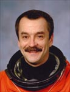

| Russian Federal Space Agency |  | |
Biographical Data |
||
Mikhail Tyurin
Russian Cosmonaut
PERSONAL DATA: Michael Tyurin lives in Korolev, a small city outside of Moscow. He was born March 2, 1960, in Kolomna, Russia (about 60 miles from Moscow) where his parents still reside. He is married to Tatiana Anatoleyvna Tyurin. They have a daughter, Alexandra, born in 1982. He enjoys sailing in his free time.
EDUCATION: He graduated from the Moscow Aviation Institute in 1984 with a degree in engineering and a specialization in creating mathematical models related to mechanical flight. He is currently doing graduate work in his field of research.
EXPERIENCE: After graduating from the Aviation Institute he began working at the Energia corporation as an engineer. The main subjects of his job have been dynamics, ballistics, and software development. His personal scientific research is connected with the psychological aspects of cosmonauts' training for the manual control of spacecraft motion. In 1993 he was selected to begin cosmonaut training, and in 1998 he started training as a flight engineer for the Expedition-3 crew. He also served as a backup crew member for the first ISS mission.
Tyurin lived and worked aboard the International Space Station for a total of 125 days. The Expedition-3 crew launched on August 10, 2001 aboard STS-105 Discovery and docked with the International Space Station (ISS) on August 12, 2001. They left the station on December 15 aboard STS-108 Endeavour, landing at Kennedy Space Center, Florida, on December 17, 2001.
Tyurin was the Commander of Soyuz-13 (TMA-9) / Expedition 14, launching on September 18, 2006 from Baikonour, and docking with the International Space Station on September 20, 2006. He served as Flight Engineer during a six-month tour of duty aboard the space station. Tyurin performed 5 spacewalks accumulating 25 hours and 32 minutes of EVA time and a total of 215 days in space. The mission concluded on April 21, 2007 with a landing in the steppes of Kazakhstan.
Expedition 38/39 (November 7, 2103 to May 14, 2014). Tyurin launched from the Baikonur Cosmodrome in Kazakhstan to the International Space Station along with NASA astronaut Rick Mastracchio and Japan Aerospace Exploration Agency (JAXA) Flight Engineer Koichi Wakata. Upon reaching the station, they joined Roscosmos cosmonaut Fyodor Yurchikhin, NASA astronaut Karen Nyberg and Luca Parmitano of the European Space Agency (ESA), plus Roscosmos cosmonauts Oleg Kotov and Sergey Ryazanskiy and NASA astronaut Michael Hopkins. Tyurin, Mastracchio and Wakata returned to Earth after 188 days in space. During the expedition, the crew completed 3,008 orbits of the Earth and traveled more than 79.8 million miles.
In completing his third space mission, Tyurin has accumulated a total of 532 days in space including 25 hours and 32 minutes of EVA time in 5 spacewalks.
MAY 2014